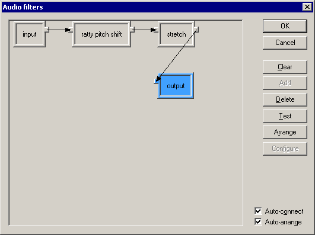

VirtualDub help - Dialogs: Audio filters | |
| On a crash... Dialogs: Video filtersVideo frame rate control Video color depth Video range Video compression Audio filters Audio interleaving Audio compression Audio conversion Audio volume Capture settings Capture preferences Capture volume meter Preferences |  VirtualDub's advanced audio filter mode supports a filter graph model, where you can chain filters in complex, branching configurations. Filters are represented by rectangular nodes on the graph; each node may have input pins on the left and output pins on the right.
|